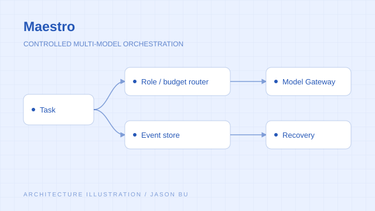
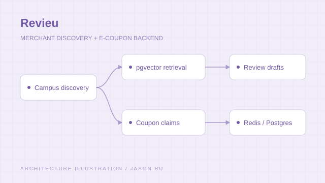
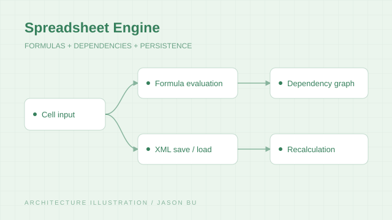

University of Southern California
Viterbi School of Engineering · Los Angeles
M.S. in Computer Science
EXPECTED MAY 2027👋 HELLO, I’M
A software engineer.
A curious builder.
I’m Jason Bu, a computer science master’s student at the University of Southern California and a computer science graduate of the University of Utah. I focus on backend development, AI agents, and infrastructure, and enjoy turning complex problems into practical solutions.
During software engineering internships at MW Polar and Sunline Tech, I worked on AI workflow automation, banking-system performance, and CI/CD pipelines. Through Maestro, Revieu, and Spreadsheet Engine, I also explore multi-model orchestration, backend architecture, and software systems design.
Outside of coding, I enjoy traveling, cooking, researching AI, and analyzing the stock market. I’m seeking SDE opportunities where I can work with a team to build useful, reliable products.
I enjoy breaking down complex problems and using code to solve real needs.
My Codex tokens used
LOCAL SNAPSHOT / 2026-10-011,352,732,249 tokens recorded in retained local Codex sessions from March 4 to October 1, 2026. Includes cached input and subagent usage; excludes inherited fork counts. A dated snapshot, not a live counter.
Computer science, from Salt Lake City to Los Angeles.
Viterbi School of Engineering · Los Angeles
M.S. in Computer Science
EXPECTED MAY 2027Price College of Engineering · Salt Lake City
B.S. in Computer Science
MAY 2025My background, the work I care about, and what I’m looking to build next. A short introduction is on the way.
Turning operational bottlenecks into faster workflows, resilient services, and releases teams can trust.
Backend engineering, AI orchestration, and product thinking — grounded in real constraints.

A Python orchestration core for model routing, event-based recovery, budget accounting, and controlled agent execution.
Implemented configuration, event storage, artifact storage, budget accounting, and policy modules. The complete execution loop is still in development; performance targets await benchmark evidence.

An AI-enhanced discovery and e-coupon platform. Led backend technical design within a six-person team.
Built pgvector retrieval for merchant-grounded review drafts and a Redis/PostgreSQL coupon workflow. Resume-reported internal testing: draft acceptance rose from 61% to 83%, with 5K+ concurrent claim requests and 20% fewer duplicate claims.

An Excel-style C# spreadsheet model with formula evaluation and dependency-graph recalculation.
Implemented cell validation, XML save/load, and a graphical front end. Added tests across formula, dependency, and spreadsheet layers.
New places, good food, market patterns, and the next AI paper worth reading.
Open to software engineering opportunities and thoughtful conversations.